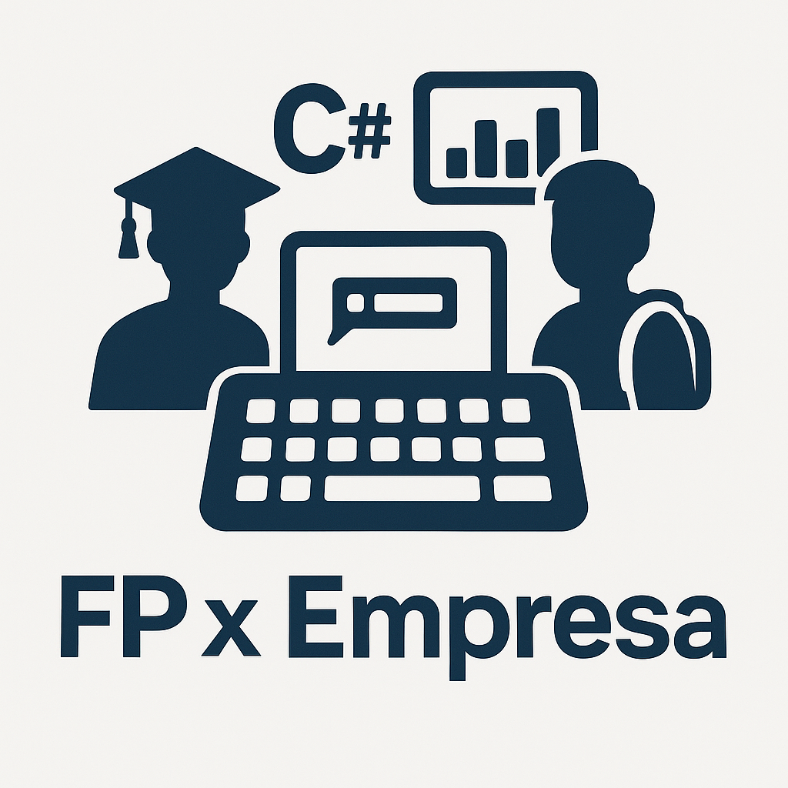
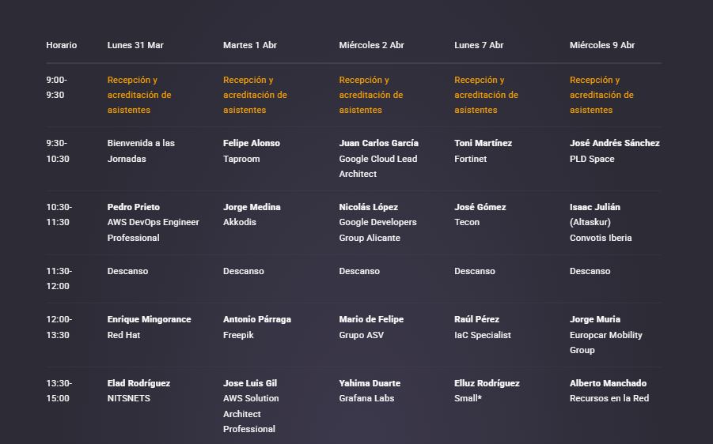

¿Qué son las jornadas?
Un evento que conecta el conocimiento de empresas referentes en tecnología, con los estudiantes de los principales Institutos de Formación Profesional de la Provincia de Alicante.
Es un espacio de intercambio de experiencias, de píldoras formativas y de inspiración profesional.
Durante estas jornadas, nuestro centro educativo ha contado con la participación de diversas
empresas tecnológicas que han compartido con nosotros su experiencia,
conocimientos y visión del sector. El objetivo principal ha sido acercar el mundo laboral a los estudiantes
de Formación Profesional, impulsando el aprendizaje práctico y actualizado.

Temáticas y conceptos tratados
A lo largo de las charlas y talleres, se abordaron temas clave como la
programación, la seguridad informática,
inteligencia artificial, DevOps,
cloud computing y muchos otros conceptos esenciales en el mundo digital actual.

Ciberseguridad e Inteligencia Artificial
Una de las ponencias más destacadas fue la de Fortinet, enfocada en cómo la
IA está revolucionando la ciberseguridad, permitiendo detectar amenazas
en tiempo real, automatizar respuestas ante ataques y anticiparse a los riesgos emergentes.

Programa de Ponencias
